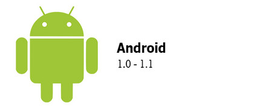
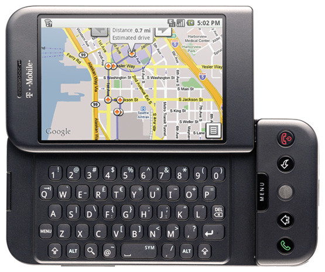
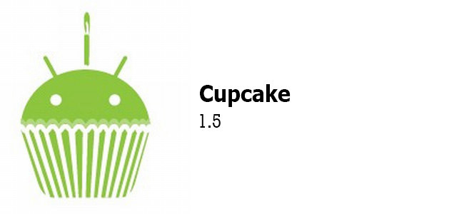
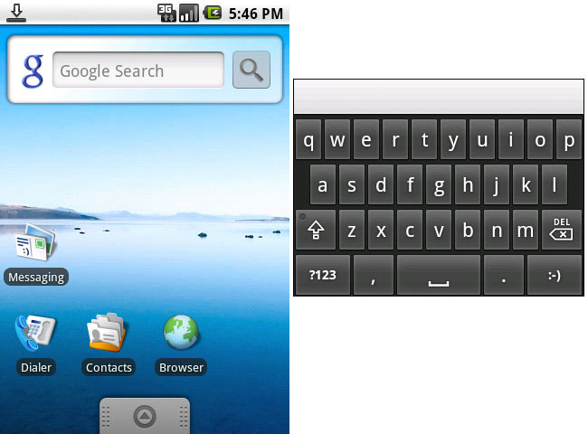
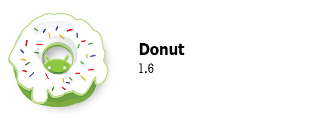
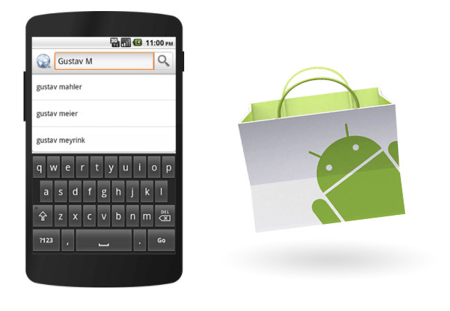

Android 1.0
El 23 de septiembre de 2008 se lanzaba el primer teléfono con Android, el HTC Dream / T-Mobile G1 y empezaba la carrera de versiones, subversiones y logos de postres que ha continuado hasta nuestros días.

En los inicios, Android era Android, sin postre. La primera versión de Android se hizo pública el 23 de septiembre de 2008 y no era un espectáculo para la vista, pero incluía mucho de los bloques fundamentales de Android que han llegado hasta nuestros días. Más simples y más toscos, eso sí.

Ya estaban ahí la pestaña de notificaciones, los widgets en la pantalla de inicio y el Android Market. La integración con Gmail era excelente y se incluían todas las aplicaciones que esperarías tener en un feature phone como el navegador web, la calculadora o el reloj. Si necesitabas más, podías descargarlo desde Android Market, aunque por aquel entonces no había demasiadas aplicaciones. Ya estaban ahí los mapas de Google, y quien faltaba era el teclado virtual.
Android 1 recibió solo una actualización. La versión 1.1 llegaba en febrero de 2009 con una buena lista de correcciones de errores. Nada revolucionario más allá de la actualización en sí, over-the-air, que por aquel entonces ningún otro sistema operativo móvil era capaz de hacer.
Android 1.5 Cupcake

El 27 de abril de 2009 llegaba Android 1.5 Cupcake y se iniciaba así la tradición de nombrar a las versiones mayores según un postre, por orden alfabético. Llegaba dos meses después de Android 1.1 y refinaba un poco el diseño para hacerlo más atractivo. Cambios sutiles: una transparencia por aquí, una sombra por allá.

Un cambio importante fue la inclusión del soporte para teclados virtuales y widgets de otras aplicaciones. Recibía también el soporte para copiar y pegar en el navegador web, transiciones animadas, rotación automática de la pantalla y la posibilidad de subir vídeos a YouTube.
Android 1.6 Donut

Del cupcake pasamos al donut, lanzado el 15 de septiembre de 2009. Uno de sus cambios más importantes es la aparición del cuadro de búsqueda rápida. Anteriormente, el widget de búsqueda de Google te llevaba al navegador web, mientras que ahora la búsqueda se realizaba directamente en la aplicación. Android Market recibía también un importante lavado de cara, mientras la oferta de aplicaciones empezaba a despuntar.

Bajo el capó, los cambios eran más importantes todavía. Comenzaba la explosión de resoluciones, tamaños de pantalla y dpi que ha acompañado a Android desde sus inicios. El sistema se adaptaría ahora al tamaño y resolución de la pantalla, abriendo la puerta a las mil y una configuraciones que han hecho que el ecosistema Android sea tan variado.
Otras novedades incluían el sintetizador de voz en múltiples idiomas, mejoras en la cámara y en la galería, que ganaba la posibilidad de seleccionar múltiples fotos para borrarlas a la vez. En cuanto a la conectividad, incluía soporte para redes CDMA y conexiones VPN.